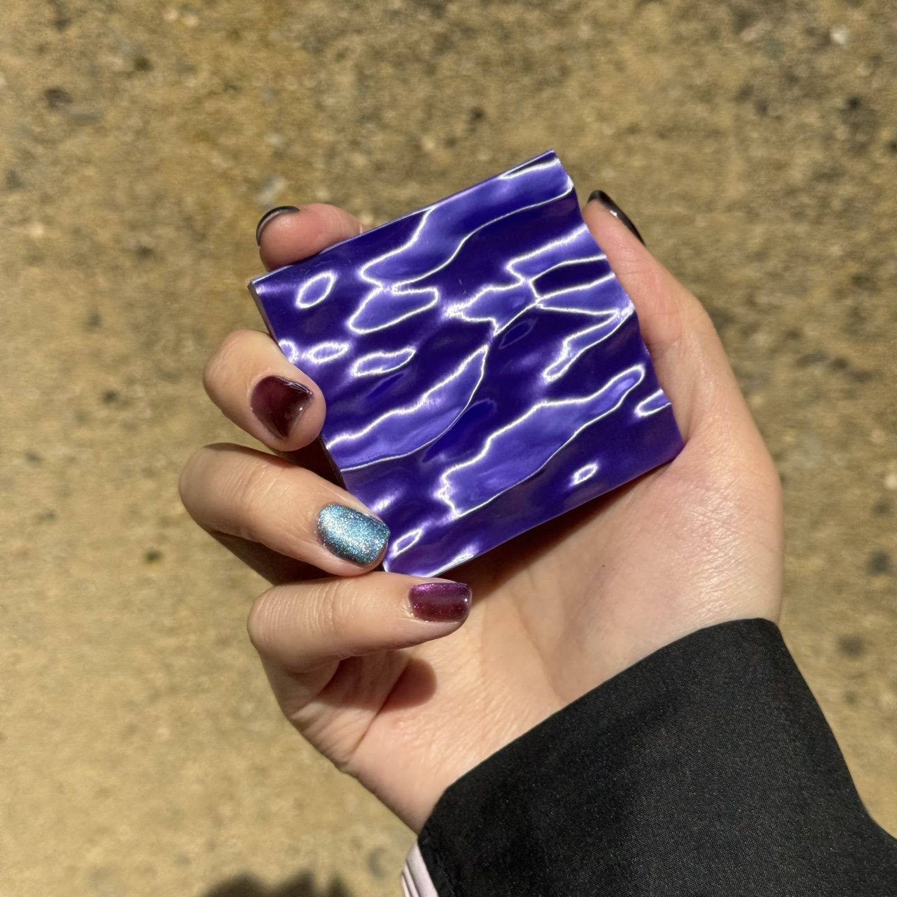

Making
3D printing
I model in Fusion 360 and print small objects. Some are for fun and some are for class experiments.

Wind turbine for a fluids experiment, mounted in the wind tunnel test section.

Silk wave, printed for fun.

Even more fun: four small boxes shaped as a heart, a flower, a conch, and a scallop.